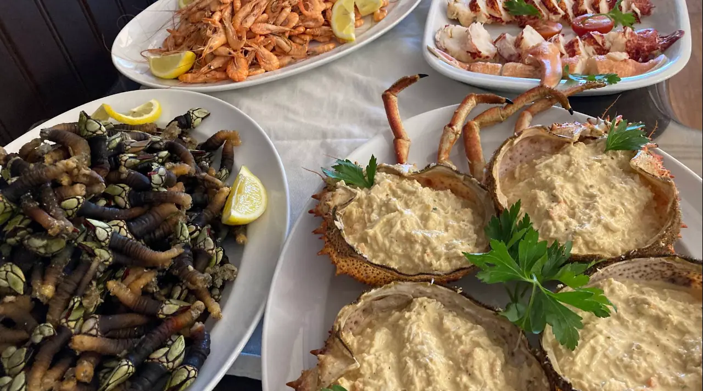
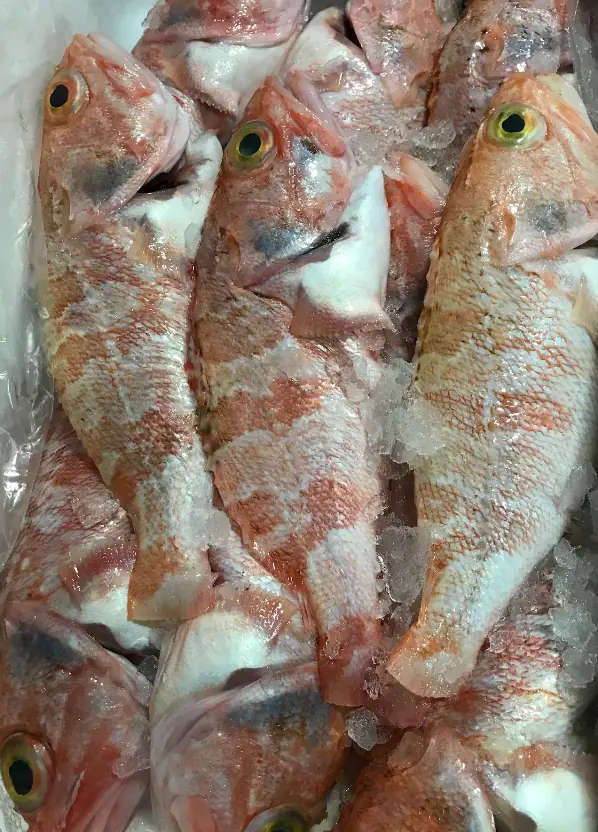
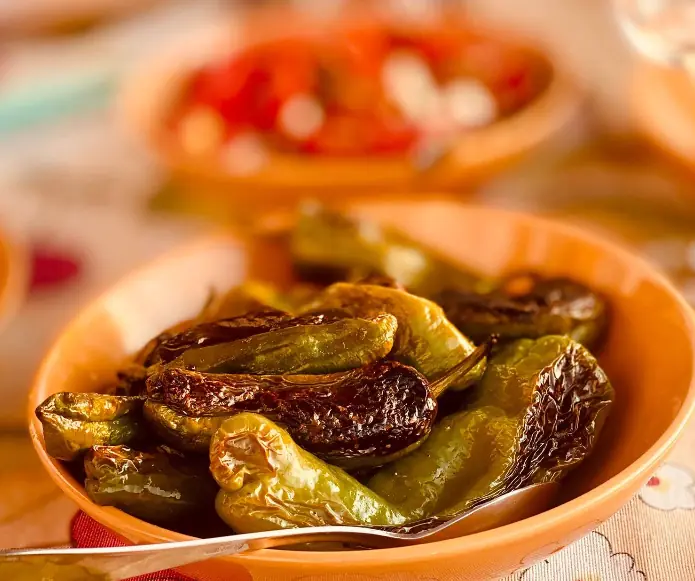
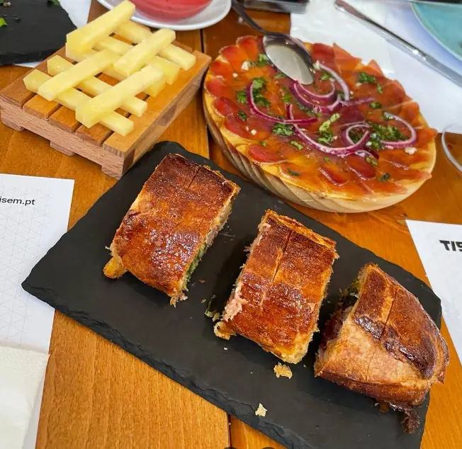
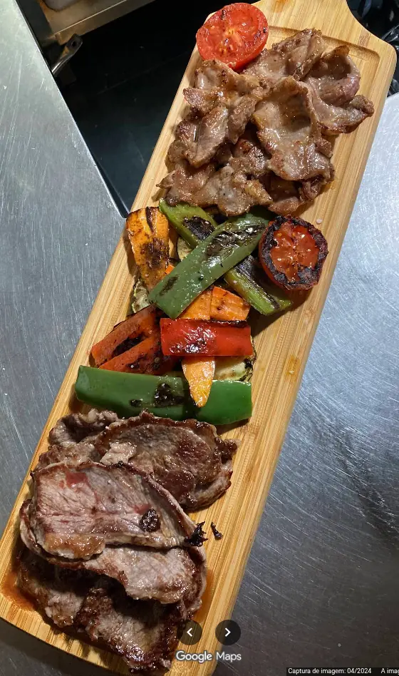
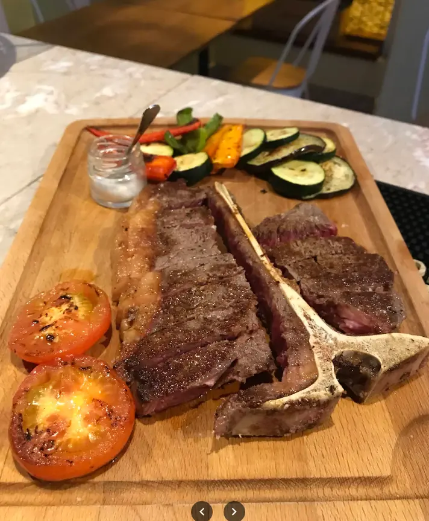
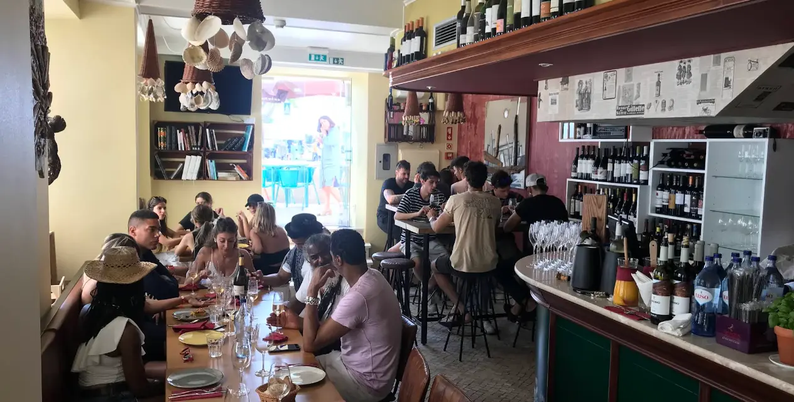

Pica-Pau
8,50 €Nacos de lombo salteados em manteiga de alho, vinho branco e um toque de piripíri, com pickles caseiros e muito pão para o molho. Feito para espetar à vez, entre dedos e conversa.

Cozinha portuguesa de tasca, feita para o meio da mesa — pratos que se espetam à vez, um copo que nunca fica vazio e conversa sem hora para acabar.
No Cataventos, a mesa é feita de pratos pequenos e vontades grandes. Trazemos o petisco quando fica pronto, coloca-se ao centro e comemos como se comia em casa dos avós — de garfo em riste, a disputar o último naco e a molhar o pão no molho que sobra.
O & Companhia não é acaso: só há boa mesa quando há gente à volta dela. Sente-se, não tenha pressa e deixe o cata-vento marcar o ritmo — devagar, ao sabor do vento.

Uma escolha para pedir aos poucos e ir enchendo a mesa. Todos pensados para dividir — mas ninguém está a contar.
Nacos de lombo salteados em manteiga de alho, vinho branco e um toque de piripíri, com pickles caseiros e muito pão para o molho. Feito para espetar à vez, entre dedos e conversa.

O melhor do mar da Figueira numa só travessa: camarão, percebes e santola recheada, ao sabor da maré. Para partilhar de mãos na massa, sem pressa.

Direto da lota para a brasa: salmonetes, robalo ou o que o dia trouxer, só com sal, azeite e limão. Peça ao empregado o que há de mais fresco hoje.

Estufadas em lume brando com tomate, louro e um copo de tinto, até ficarem macias e o molho encorpado. Pedem pão rústico e não perdoam pressas.

Salteados em azeite até tostarem, com flor de sal grosso. Uns são doces, outros picam — a graça é nunca se saber qual é qual. O petisco perfeito para começar.

Seleção de queijos curados e enchidos regionais, com carne fumada, azeitonas e pão acabado de cortar. A entrada de sempre para abrir a mesa e a conversa.

Sortido de carnes na brasa com legumes grelhados e pimentos assados, servido na tábua a fumegar. Feita para o meio da mesa e para dividir a dois ou a quatro.

Grelhado no ponto, flor de sal e um fio de azeite, com legumes e tomate na brasa. Um naco a sério para dois — venha com fome e companhia.
Os preços são indicativos (placeholder). Temos sempre um petisco do dia — pergunte à mesa. Informe-nos de alergénios.

Porque petisco pede copo. Escolha sem cerimónia.
Madeira quente, luz baixa e o burburinho certo. Venha ver.




“Entrámos para um copo e saímos três horas depois. As moelas e a tábua desapareceram — voltamos já para a semana.”
— Marta & Rui, Figueira da Foz
“Sabe a casa de avó com alma nova. O pica-pau é perigoso: não se consegue parar.”
— Tiago F.
“O sítio certo para levar quem não é de cá e dizer: ‘isto é que é petiscar’.”
— Inês C.
Reservamos com gosto — sobretudo ao fim de semana. Diga-nos quando e quantos são.